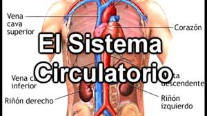

La sangre es el vehículo del oxígeno que entra por los pulmones y que debe ser repartido a lo largo y ancho del organismo. Para ello, la sangre abarca una enorme red de arterias y vasos capilares que llevan la sangre oxigenada hasta cada rincón, y de venas que recoge la sangre cargada de dióxido de carbono y realiza el recorrido de vuelta hacia los pulmones, para volver a empezar el circuito.
El motor de este movimiento es un músculo que late constantemente en nuestro pecho y que se llama corazón. Este opera como una bomba, succionando la sangre y empujándola de nuevo, a través de un sistema de cavidades independientes que impide que la sangre arterial y la de las venas se mezcle. Este papel es indispensable en el organismo y cualquier defecto que disminuya la capacidad del corazón tiene efectos en la salud general.
